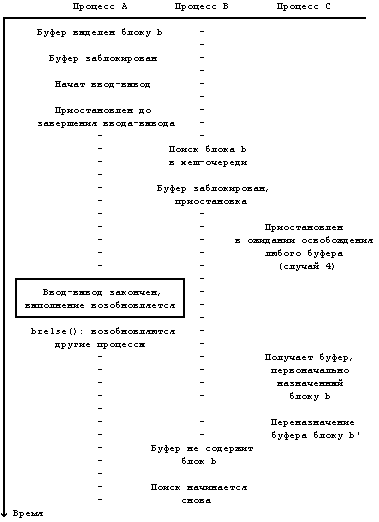

Теперь, когда алгоритм выделения буферов нами уже рассмотрен, будет легче понять процедуру чтения и записи дисковых блоков. Чтобы считать дисковый блок (Рисунок 3.13), процесс использует алгоритм getblk для поиска блока в буферном кеше. Если он там, ядро может возвратить его немедленно без физического считывания блока с диска. Если блок в кеше отсутствует, ядро приказывает дисководу "запланировать" запрос на чтение и приостанавливает работу, ожидая завершения ввода-вывода. Дисковод извещает контроллер диска о том, что он собирается считать информацию, и контроллер тогда передает информацию в буфер. Наконец, дисковый контроллер прерывает работу процессора, сообщая о завершении операции ввода-вывода, и программа обработки прерываний от диска возобновляет выполнение приостановленного процесса; теперь содержимое дискового блока находится в буфере. Модули, запросившие информацию данного блока, получают ее; когда буфер им уже не потребуется, они освободят его для того, чтобы другие процессы получили к нему доступ.

Рисунок 3.12. Состязание за свободный буфер
В главе 5 будет показано, как модули более высокого уровня (такие как подсистема управления файлами) могут предчувствовать потребность во втором дисковом блоке, когда процесс читает информацию из файла последовательно. Эти модули формируют запрос на асинхронное выполнение второй операции ввода-вывода, надеясь на то, что информация уже будет в памяти, когда вдруг возникнет необходимость в ней, и тем самым повышая быстродействие системы. Для этого ядро выполняет алгоритм чтения блока с продвижением breada (Рисунок 3.14). Ядро проверяет, находится ли в кеше первый блок, и если его там нет, приказывает дисководу считать этот блок. Если в буферном кеше отсутствует и второй блок, ядро дает команду дисководу считать асинхронно и его. Затем процесс приостанавливается, ожидая завершения операции ввода-вывода над первым блоком. Когда выполнение процесса возобновляется, он возвращает буфер первому блоку и не обращает внимание на то, когда завершится операция ввода-вывода для второго блока. После завершения этой операции контроллер диска прерывает работу системы; программа обработки прерываний узнает о том, что ввод-вывод выполнялся асинхронно, и освобождает буфер (алгоритм brelse). Если бы она не освободила буфер, буфер остался бы заблокированным и по этой причине недоступным для всех процессов. Невозможно заранее разблокировать буфер, так как операция ввода-вывода, связанная с буфером, активна и, следовательно, содержимое буфера еще не адекватно. Позже, если процесс пожелает считать второй блок, он обнаружит его в буферном кеше, поскольку к тому времени операция ввода-вывода закончится. Если же, в начале выполнения алгоритма breada, первый блок обнаружился в буферном кеше, ядро тут же проверяет, находится там же и второй блок, и продолжает работу по только что описанной схеме.
алгоритм bread /* чтение блока */
входная информация: номер блока в файловой системе
выходная информация: буфер, содержащий данные
{
получить буфер для блока (алгоритм getblk);
если (данные в буфере правильные)
возвратить буфер;
приступить к чтению с диска;
приостановиться (до завершения операции чтения);
возвратить (буфер);
}
|
Рисунок 3.13. Алгоритм чтения дискового блока
Алгоритм записи содержимого буфера в дисковый блок (Рисунок 3.15) похож на алгоритм чтения. Ядро информирует дисковод о том, что есть буфер, содержимое которого должно быть выведено, и дисковод планирует операцию ввода-вывода блока. Если запись производится синхронно, вызывающий процесс приостанавливается, ожидая ее завершения и освобождая буфер в момент возобновления своего выполнения. Если запись производится асинхронно, ядро запускает операцию записи на диск, но не ждет ее завершения. Ядро освободит буфер, когда завершится ввод-вывод.
алгоритм breada /* чтение блока с продвижением */
входная информация: (1) в файловой системе номер блока для
немедленного считывания
(2) в файловой системе номер блока для
асинхронного считывания
выходная информация: буфер с данными, считанными немедленно
{
если (первый блок отсутствует в кеше)
{
получить буфер для первого блока (алгоритм getblk);
если (данные в буфере неверные)
приступить к чтению с диска;
}
если (второй блок отсутствует в кеше)
{
получить буфер для второго блока (алгоритм getblk);
если (данные в буфере верные)
освободить буфер (алгоритм brelse);
в противном случае
приступить к чтению с диска;
}
если (первый блок первоначально находился в кеше)
{
считать первый блок (алгоритм bread);
возвратить буфер;
}
приостановиться (до того момента, когда первый буфер
будет содержать верные данные);
возвратить буфер;
}
|
Рисунок 3.14. Алгоритм чтения блока с продвижением
Могут возникнуть ситуации, и это будет показано в следующих двух главах, когда ядро не записывает данные немедленно на диск. Если запись "откладывается", ядро соответствующим образом помечает буфер, освобождая его по алгоритму brelse, и продолжает работу без планирования ввода-вывода. Ядро записывает блок на диск перед тем, как другой процесс сможет переназначить буфер другому блоку, как показано в алгоритме getblk (случай 3). Между тем, ядро надеется на то, что процесс получает доступ до того, как буфер будет переписан на диск; если этот процесс впоследствии изменит содержимое буфера, ядро произведет дополнительную операцию по сохранению изменений на диске.
алгоритм bwrite /* запись блока */
входная информация: буфер
выходная информация: отсутствует
{
приступить к записи на диск;
если (ввод-вывод синхронный)
{
приостановиться (до завершения ввода-вывода);
освободить буфер (алгоритм brelse);
}
в противном случае если (буфер помечен для отложенной
записи)
пометить буфер для последующего размещения в
"голове" списка свободных буферов;
}
|
Рисунок 3.15. Алгоритм записи дискового блока
Отложенная запись отличается от асинхронной записи. Выполняя асинхронную запись, ядро запускает дисковую операцию немедленно, но не дожидается ее завершения. Что касается отложенной записи, ядро отдаляет момент физической переписи на диск насколько возможно; затем по алгоритму getblk (случай 3) оно помечает буфер как "старый" и записывает блок на диск асинхронно. После этого контроллер диска прерывает работу системы и освобождает буфер, используя алгоритм brelse; буфер помещается в "голову" списка свободных буферов, поскольку он имеет пометку "старый". Благодаря наличию двух выполняющихся асинхронно операций ввода-вывода - чтения блока с продвижением и отложенной записи - ядро может запускать программу brelse из программы обработки прерываний. Следовательно, ядро вынуждено препятствовать возникновению прерываний при выполнении любой процедуры, работающей со списком свободных буферов, поскольку brelse помещает буферы в этот список.
Предыдущая глава || Оглавление || Следующая глава